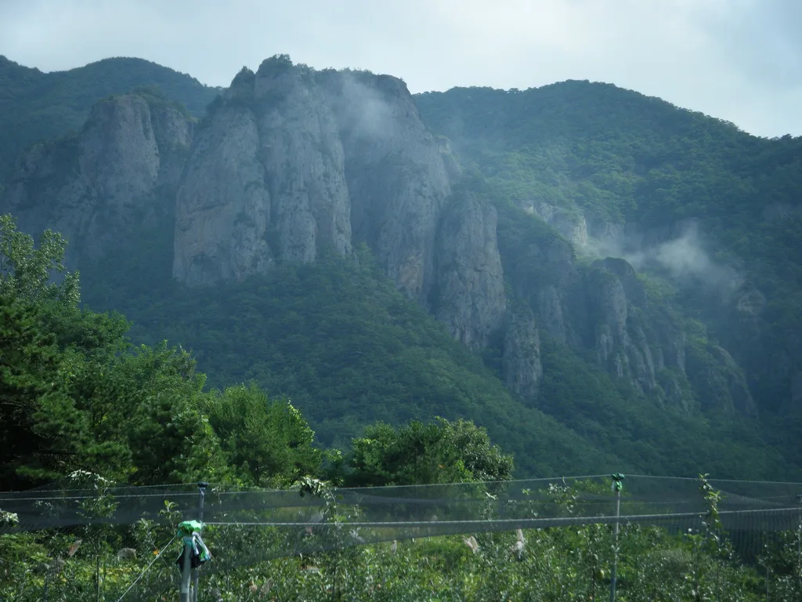
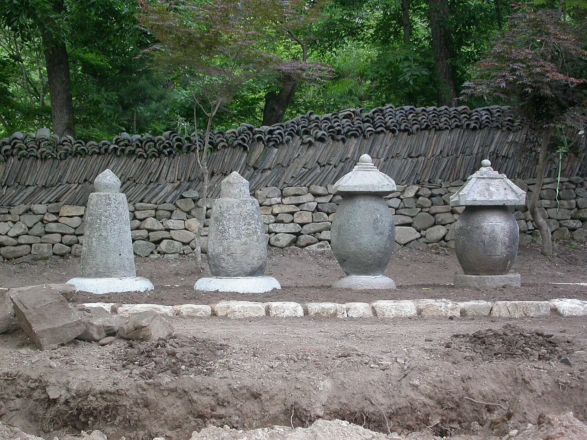
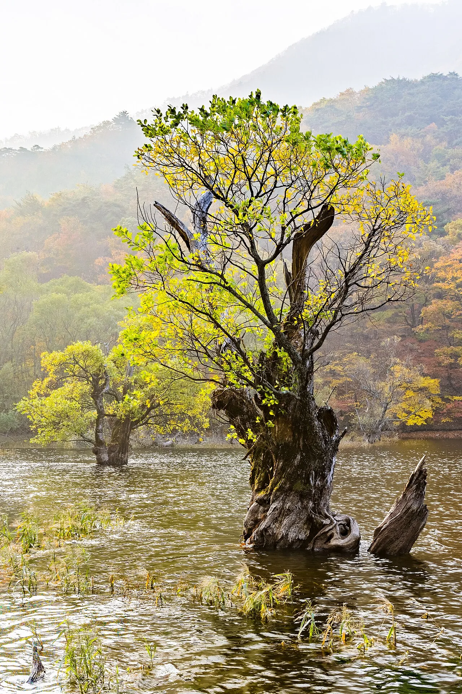

▲ 주왕산 협곡 구간. 탐방로는 평탄하지만 주차장에서 여기까지 오는 거리가 따로 있다 ⓒ Wikimedia Commons
1. 입장료 이야기부터 정리하면
국립공원 입장료는 2007년에 폐지됐습니다. 1970년 속리산을 시작으로 징수돼 오던 제도가 그때 사라졌습니다.
그런데 그 뒤로도 돈을 내는 경우가 있었습니다. 공원 안에 있는 사찰이 별도로 받던 문화재관람료 때문입니다. 입장료가 없어졌는데도 매표소에서 돈을 내는 상황이 오랫동안 이어졌습니다.
주왕산에서는 이 문제도 정리됐습니다. 개정 문화재보호법이 2023년 5월 4일 시행되면서, 공원 안 대전사가 문화재관람료 폐지에 동참했습니다. 관람료를 감면한 소유자·관리단체가 국가로부터 감면분을 지원받을 수 있게 된 데 따른 것입니다.
즉 지금 주왕산에서 내는 돈은 주차료 등으로 한정됩니다. 오래된 정보를 보고 입장료를 준비할 필요는 없습니다.
다만 주차료는 안내 자료마다 다르게 나옵니다. 탐방지원센터 앞 주차장 기준으로 소형 2,000원·중형 4,000원·대형 6,000원으로 안내하는 자료가 있고, 소형 1,500원·중대형 3,000원으로 적은 자료도 있습니다. 국립공원공단 공지에 따라 변경될 수 있으므로 방문 전 확인이 필요합니다.
어느 쪽이든 요점은 같습니다. 하루 주차료가 만 원을 넘지 않습니다. 이 정도 금액이 여행 계획을 좌우하지는 않습니다. 문제는 다음 항목입니다.
2. 어느 IC로 나갈 것인가
접근은 당진영덕고속도로를 쓰는 경로가 편합니다. 청송IC 또는 영덕IC에서 나와 부남면과 주왕산 방향 국도를 따라 들어갑니다.
두 IC의 성격이 다릅니다. 수도권과 중부에서 내려온다면 청송IC가, 동해안을 끼고 이동한다면 영덕IC가 자연스럽습니다. 영덕 쪽으로 붙이면 바다와 산을 하루에 묶을 수 있습니다.
국도 구간은 굽이가 많습니다. 고속도로 구간이 짧게 끝나고 국도가 길게 이어지므로, 내비게이션의 예상 시간보다 여유를 두는 편이 좋습니다.

▲ 주왕산의 바위 봉우리. 계곡을 감싸는 지형이라 단풍이 늦게까지 남는다 ⓒ Wikimedia Commons
3. 진짜 비용은 걷는 거리
주왕산에서 실질적인 부담은 요금이 아니라 동선입니다. 주차장에서 계곡 입구까지, 그리고 계곡 안쪽까지 걸어 들어가야 합니다.
탐방로 자체는 평탄한 편입니다. 대전사에서 시작해 계곡을 따라 폭포 쪽으로 이어지는 구간은 경사가 완만하고 길이 잘 정비돼 있습니다. 등산이라기보다 걷기에 가깝습니다.
문제는 왕복 거리입니다. 폭포까지 갔다 오면 상당한 거리가 됩니다. 가을 성수기에는 여기에 인파가 더해집니다. 앞사람 속도에 맞춰 걷게 되므로 예상보다 시간이 더 걸립니다.
가족 단위라면 목표 지점을 미리 정하는 편이 낫습니다. 첫 번째 폭포까지만 갈지, 안쪽까지 들어갈지에 따라 소요 시간이 두 배 차이 납니다.
4. 대전사와 주산지
대전사는 672년 의상대사가 창건한 것으로 전해집니다. 보광전은 보물로 지정돼 있습니다. 탐방로 초입에 있어 자연스럽게 지나가게 됩니다.

▲ 대전사 경내의 석조 부도. 이 사찰이 2023년 5월 문화재관람료 폐지에 동참하면서 매표 절차 자체가 사라졌다 ⓒ 한국관광공사
주산지는 별도의 목적지입니다. 조선 숙종 때 축조된 저수지로, 수령 300년이 넘는 왕버들이 물속에 뿌리를 내리고 자랍니다. 물안개가 낀 새벽 풍경으로 알려진 곳입니다.
주왕산 계곡과 주산지는 같은 청송 안에 있지만 별개의 코스입니다. 차로 이동해야 하고, 각각 주차와 도보 구간이 따로 있습니다. 하루에 둘 다 보려면 시간 배분이 필요합니다.

▲ 주산지. 물속에 뿌리를 내린 왕버들 고목이 물안개와 어우러지는 새벽이 이곳의 본편이다 ⓒ 한국관광공사
5. 언제 가야 하나
주왕산 단풍은 바위 지형 덕분에 늦게까지 남는 편입니다. 계곡이 바위에 둘러싸여 있어 바람의 영향을 덜 받기 때문입니다.
주산지는 새벽이 본편입니다. 물안개는 해가 뜨기 전후에 생깁니다. 즉 이 두 곳을 제대로 보려면 전날 청송에 묵는 일정이 필요합니다.
당일치기라면 선택해야 합니다. 새벽 주산지를 포기하고 낮에 계곡을 걷거나, 반대로 이른 아침 주산지를 보고 오전 중에 계곡을 도는 방식입니다.
6. 자차 여행자를 위한 정리
첫째, 입장료 정보를 최신으로 확인하십시오. 국립공원 입장료는 2007년, 대전사 문화재관람료는 2023년 5월에 각각 정리됐습니다. 인터넷에는 아직 옛 요금이 남아 있는 글이 많습니다.
둘째, 주차 위치에 따라 걷는 거리가 달라집니다. 성수기에 늦게 도착하면 먼 주차장에 대게 되고, 그만큼 왕복 도보 거리가 늘어납니다. 오전 도착이 유리한 이유입니다.
셋째, 목표 지점을 미리 정하십시오. 계곡 어디까지 들어갈지를 정하지 않으면 "조금만 더"를 반복하다 돌아오는 길에 지칩니다.
넷째, 주산지를 넣으려면 숙박을 고려하십시오. 새벽 물안개는 당일치기로 잡기 어려운 시간대에 있습니다.
정리하면 이렇습니다. 주왕산은 돈이 거의 들지 않는 대신 시간이 드는 곳입니다. 그래서 이곳의 준비물은 요금표가 아니라 출발 시각과 목표 지점입니다.